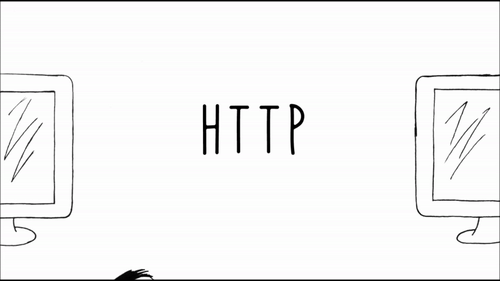
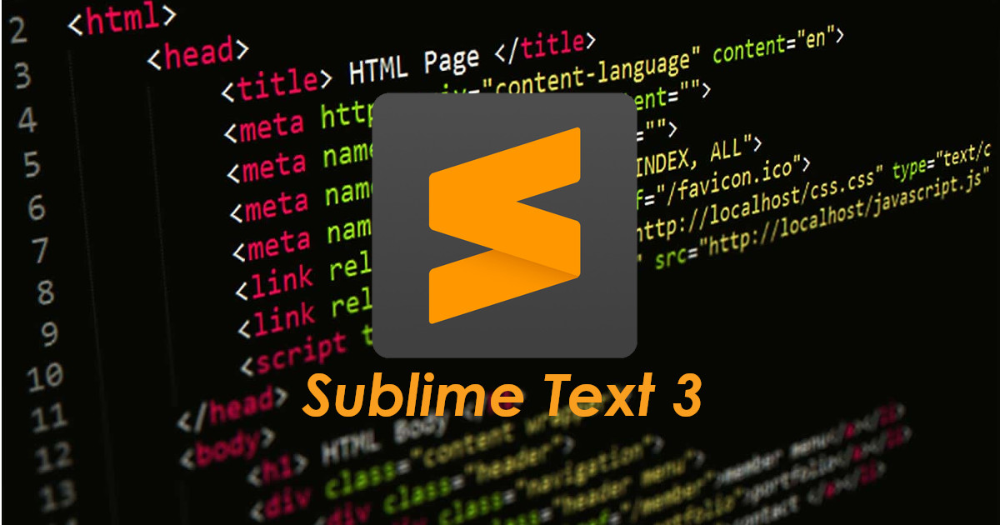
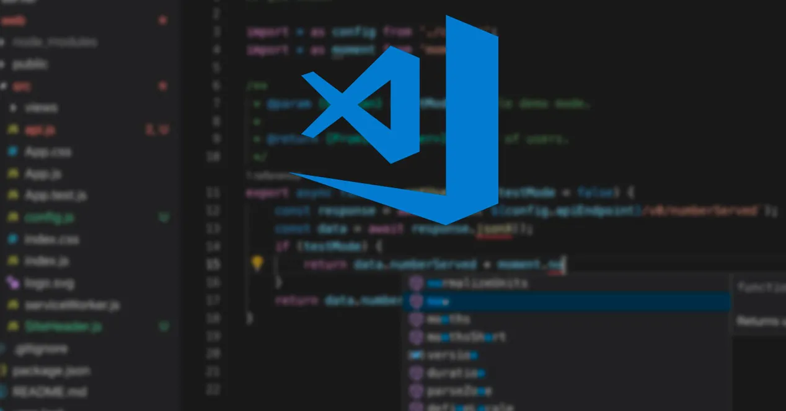
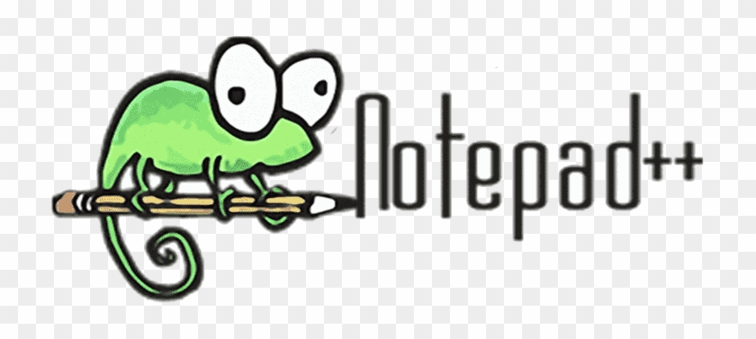

¿Qué es el diseño web?
En este caso, los diseñadores web crean las páginas utilizando lenguajes de marcado como HTML o XML. Por otro lado, la parte visual de los sitios está a cargo del CSS, término utilizado para estilizar los elementos escritos en HTML. Por lo tanto, es común que los diseñadores web utilicen ambos para construir un site porque juntos definirán cómo aparecerán las páginas en los navegadores.
¿Qué son metadatos?
Producto de la gran cantidad información y recursos que existen en Internet, se hizo necesario establecer un mecanismo para etiquetar, catalogar, describir y clasificar los recursos presentes en la World Wide Web, esto para facilitar la posterior búsqueda y recuperación de la información. Este mecanismo los constituyen los llamados metadatos.
¿Qué es SEO?
El SEO es un término que procede del inglés, en concreto de la expresión Search Engine Optimization, que traducido al castellano sería Optimización del Motores de Búsqueda. Hace referencia al conjunto de técnicas usadas para mejorar la posición en los buscadores de una página web. Estas técnicas variarán según los algoritmos que emplea cada buscador para definir la posicición de cada página.
¿Qué es Hipertexto?
El término hipertexto se ha convertido en un lugar común para designar una serie de entidades de signo muy dispar. Como afirman Pastor y Saorín, "se ha producido una inflación del término 'hipertexto', de modo que su contenido se ha reducido prácticamente al de "salto entre dos puntos" o "relación". Además, su presencia en la World Wide Web, ha contribuido a la confusión terminológica y conceptual.

¿Qué es WWW?
La World Wide Web —comúnmente conocida como WWW, W3, o la Web— es un sistema interconectado de páginas web públicas accesibles a través de Internet (art. en inglés). La Web no es lo mismo que el Internet: la Web es una de las muchas aplicaciones construidas sobre Internet.
¿Qué es Protocolo HTTP?
Un protocolo es un conjunto de normas y reglas que se aplican para guiar una acción o un proceso. Si nos centramos en el ámbito de la informática, la noción se vincula a las pautas que se utilizan para establecer un proceso de comunicación entre diversos equipos o sistemas.
¿Qué es portal WEB?
Portal es un término, sinónimo de puente, para referirse a un Sitio Web que sirve o pretende servir como un sitio principal de partida para las personas que se conectan al World Wide Web. Son sitios que los usuarios tienden a visitar como sitios ancla. Los portales tienen gran reconocimiento en Internet por el poder de influencia que tienen sobre grandes comunidades.
¿Qué es FrontEnd y Backend?
Front End:
Front End es la parte de una aplicación que interactúa con los usuarios, es conocida como el lado del cliente. Básicamente es todo lo que vemos en la pantalla cuando accedemos a un sitio web o aplicación: tipos de letra, colores, adaptación para distintas pantallas(RWD), los efectos del ratón, teclado, movimientos, desplazamientos, efectos visuales… y otros elementos que permiten navegar dentro de una página web. Este conjunto crea la experiencia del usuario.Back End:
Como hemos dicho antes, Front end es todo con lo que el usuario se encuentra directamente en la web o aplicación, entonces cuando hablamos de “Back end” nos referimos al interior de las aplicaciones que viven en el servidor y al que a menudo se le denomina “el lado del servidor”.
¿Qué es Framework?
Un Framework, que se podría traducir aproximadamente como marco de trabajo, es el esquema o estructura que se establece y que se aprovecha para desarrollar y organizar un software determinado. Esta definición, algo compleja, podría resumirse como el entorno pensado para hacer más sencilla la programación de cualquier aplicación o herramienta actual.
React:
Seguro que ya lo esperabas antes de abrir el artículo, React es el gran favorito de los desarrolladores. Por si aún no lo conoces, es una librería de Facebook enfocada en la creación de vistas con particularidades como los patrones de eventos que permiten actualizar las mencionadas vistas cuando los datos hayan sido modificados, aportando una carga en tiempo real a nuestro desarrollo.¿Qué es un CMS?
Un CMS es un software desarrollado para que cualquier usuario pueda administrar y gestionar contenidos de una web con facilidad y sin conocimientos de programación Web. Previamente un programador deberá desarrollar la página web en base al CMS más apropiado para el tipo de web, dejando las tareas posteriores de gestión en manos del usuario final.
Ventajas:
- "Los programadores y la comunidad están organizados para desarrollar y lanzar nuevas versiones de estos CMS de forma periódica."
- Existen miles de módulos (o plugins) desarrollados por otros programadores independientes que nos sirven para complementar el CMS base con nuevas funcionalidades de forma gratuita o de pago.
- Están diseñados para que una vez implementado el proyecto web, pueda ser el cliente final quien haga la gestión de contenidos, dejando al desarrollador para tareas de modificaciones, actualizaciones y mantenimiento.
Desventajas:
- Costos de implementación ocultos para perfeccionar el sistema y adaptarlo a las necesidades de los usuarios: compra de plugins, temas, etc
- Recursos del servidor: Algunos CMS (por ejemplo, Joomla!) pueden devorar los recursos del servidor y provocar una caída del servicio
- Algunas debilidades técnicas: Si los usuarios tienen aversión a aprender los conceptos básicos de usar un CMS, su uso no será tan eficiente. Esto significa que podría ser necesario contratar personal experimentado o ayuda técnica
¿Qué es edito de codigo?
Gracias a soluciones do-it-yourself (hazlo tú mismo) como los módulos de creación de páginas web, ahora los usuarios pueden elaborar webs sencillas sin necesidad de poseer grandes conocimientos informáticos. Estas herramientas incluyen plantillas prediseñadas y componentes de configuración que pueden escogerse y arrastrarse hasta la posición deseada, mientras el texto fuente subyacente se va generando automáticamente. Pese a todo, desarrollar páginas web profesionales sigue requiriendo lo mismo de siempre: programadores con conocimientos profundos de HTML, CSS y JavaScript. Al contrario que las webs elaboradas con asistentes, las páginas desarrolladas por profesionales se distinguen por su alto grado de personalización y por la calidad, limpieza y legibilidad de su código fuente.
- SUBLIME TEXT 3:
- VISUAL STUDIO CODE:
- NOTEPAD++
Empiezo por el que yo utilizo normalmente: Sublime Text 3 un editor de código válido para Mac, Windows y Linux y es uno de los editores de texto más completos que existen
Gratuito, estable, open source, muy robusto y buena velocidad de trabajo son algunas de las principales características de Visual Studio Code, el editor de código desarrollado por Windows (aunque también funciona con Mac; y, además, muy bien).
Un imprescindible en el sistema operativo Windows es Notepad++. Ahora trabajo con Mac, pero cuando utilizaba Windows, era mi editor de código de cabecera.
